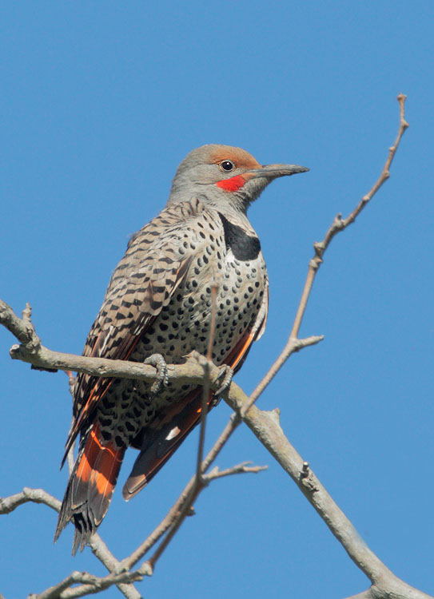
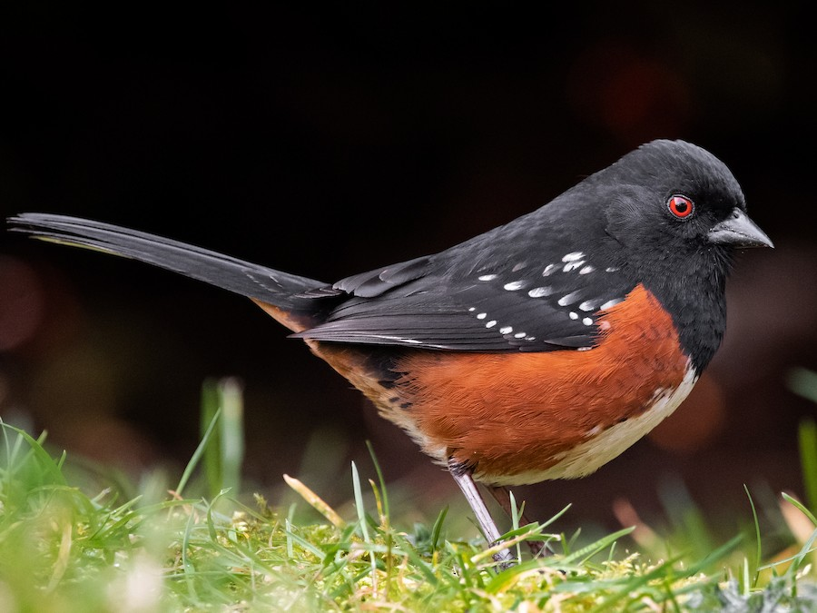

Birds
Northern Flicker
Alright, first up we've got the Norther Flicker! It's a type of woodpecker known for its distinctive spotted plumage and loud, ringing calls. They are often seen on the ground, where they forage for ants and other insects.
Redwinged Blackbird

Next, we have the Redwinged Blackbird! These birds are easily recognizable by the bright red and yellow patches on their wings. They are often found in wetlands and marshes, where they build their nests among the reeds. These ones have a very distinctive call.
Spotted Towhee
Here we have a Spotted Towhee! These birds are known for their striking red eyes and the black and white speckles on their wings. They are often found in dense shrubs and thickets, where they forage for insects and seeds.